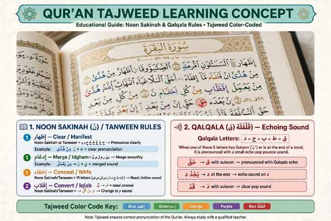

What Is Tajweed and Why Is It Important for Correct Quran Reading?

Tajweed is the set of rules that helps Muslims recite the Quran with correct pronunciation and proper articulation of Arabic letters. It teaches readers how to pronounce each letter from its correct point of articulation and observe the characteristics and recitation rules that apply to Quranic words.
If you are a beginner or a parent looking for Quran lessons for your child in the USA or UK, learning Tajweed step by step can help build accurate pronunciation, confidence, and fluency.
Start with a guided lesson and practise the rules with a teacher who can listen to your recitation and correct mistakes.
Book Your Free Trial →Why Is Tajweed Important?
Arabic letters can sound similar to learners, but their articulation points and characteristics are not always the same. Pronouncing a letter incorrectly can change a word and, in some cases, its meaning. Tajweed helps readers avoid common pronunciation errors and recite the Quran carefully.
Tajweed also helps learners understand where to lengthen sounds, when to use nasalisation, how to pronounce letters clearly, and how to apply the rules of Noon Sakinah and Tanween. Listening to a qualified teacher and practising regularly are important parts of learning these skills.
Basic Tajweed Rules for Beginners
You do not need to memorise every rule on the first day. Begin with the main concepts below, then study each rule with examples and guided practice.
1. Noon Sakinah and Tanween
Noon Sakinah and Tanween have four main rules: Izhar, Idgham, Iqlab, and Ikhfa. The rule depends on the letter that follows Noon Sakinah or Tanween.
- Izhar: Pronounce the Noon sound clearly before one of the six throat letters.
- Idgham: Merge the Noon sound into a following letter according to the rule.
- Iqlab: Change the Noon sound to a concealed Meem sound before Baa, with its relevant nasal quality.
- Ikhfa: Pronounce a sound between clear pronunciation and complete merging, with Ghunnah.
Study the rules separately, paying attention to the letters, examples, and the way each sound is produced.
2. Qalqala
Qalqala is a slight bouncing or echoing sound heard when one of the five Qalqala letters is sakin: ق، ط، ب، ج، د. The effect varies depending on the letter's position and the recitation context.
Learn Qalqala rules and examples →
3. Madd
Madd means prolonging a sound according to the relevant recitation rule. The required duration depends on the type of Madd and its context; learners should practise the counts with a qualified teacher rather than lengthening sounds arbitrarily.
4. Ghunnah
Ghunnah is a nasal sound associated with specific Tajweed rules. Beginners commonly study it with Noon and Meem when they carry a Shaddah, and then practise how it applies in other rules.
5. Makharij Al-Huruf
Makharij Al-Huruf are the articulation points from which Arabic letters are pronounced. Learning these points helps students distinguish letters that may sound similar and develop more accurate Quran recitation.
Learn about Arabic letter articulation points →
6. Sifat Al-Huruf
Sifat Al-Huruf are the characteristics of Arabic letters. They help explain how a letter should sound, including qualities that distinguish it from other letters.
Explore the characteristics of Arabic letters →
Complete Tajweed Rules Series
Use this series to study one topic at a time. Start with the basic sounds, then move to the rules that depend on the letters around them.
📚 Tajweed for Beginners: Step-by-Step Guides
- Qalqala: Letters and Examples
- Ghunnah: Nasal Sound Rules
- Madd: Types of Prolongation
- Ikhfa: Letters and Examples
- Idgham: Letters and Examples
- Iqlab: The Rule of Baa
- Izhar: The Six Throat Letters
- Makharij Al-Huruf: Articulation Points
- Sifat Al-Huruf: Letter Characteristics
- Lahn Jali and Lahn Khafi: Major and Minor Recitation Mistakes
How to Learn Tajweed Online
Online Tajweed lessons can help learners practise from home while receiving live feedback. A teacher can listen to the student's recitation, identify pronunciation issues, demonstrate the correct sound, and provide exercises for continued practice.
When choosing online lessons, look for a learning plan that matches your current level, regular opportunities to recite aloud, clear feedback, and a schedule you can maintain.
Al Shimaa Quran Academy offers online Quran learning for children and adults, with individual guidance and flexible scheduling for families in the USA and UK.
How Often Should Beginners Practise Tajweed?
Short, consistent practice is often easier to maintain than occasional long sessions. Review one rule at a time, listen to a reliable recitation, practise aloud, and ask your teacher to correct specific mistakes. The amount of practice needed depends on your starting level and learning goals.
Frequently Asked Questions
Can I learn Tajweed as a complete beginner?
Yes. Beginners can start with Arabic letter pronunciation and articulation, then gradually learn basic rules using examples and guided recitation practice.
Can I learn Tajweed online?
Yes. Online lessons can provide live practice and feedback from a teacher. A stable internet connection and regular recitation practice can help you make progress.
Should children learn Tajweed?
Children can begin learning correct letter pronunciation and age-appropriate Tajweed concepts. Lessons should suit the child's age, reading level, and ability to focus.
How do I know which Tajweed rule to learn first?
Start by checking your Arabic letter pronunciation and reading level with a teacher. You can then follow a structured sequence that introduces each rule with examples and practice.